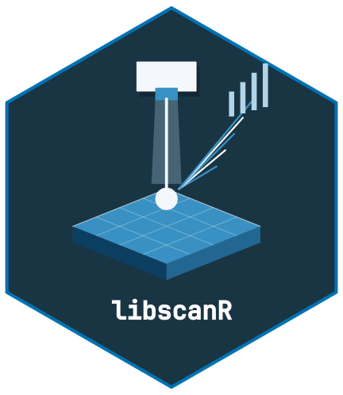

Calibration and Quantification
Source:vignettes/calibration-quantification.Rmd
calibration-quantification.Rmd

From peak area to concentration
A LIBS calibration converts measured peak area (or intensity ratio) to elemental concentration using a set of matrix-matched standards.
Synthetic calibration dataset
cal_ds <- ls_example_data("calibration")
cal_ds
conc <- cal_ds$sample_info$concentration
unique(conc)
#> [1] 0 100 250 500 1000 2500 5000 7500 10000Univariate calibration
cal <- ls_calibrate(cal_ds, element = "Ca", line_nm = 393.37,
concentrations = conc, method = "univariate",
verbose = FALSE)
calInternal standard calibration
An internal standard needs a measured, positive reference response in every spectrum. The broad noisy display dataset above does not guarantee this. The following separate numerical example uses two resolved Gaussian peaks, a constant reference and a small deterministic background perturbation. It demonstrates the ratio workflow, not a physically validated plasma or correction for matrix effects.
wl_is <- c(seq(392, 395, by = 0.02), seq(587, 591, by = 0.02))
spectra_is <- lapply(seq_along(conc), function(i) {
response <- 5 + 0.1 * conc[i] * exp(-0.5 * ((wl_is - 393.37) / 0.12)^2) +
20 * exp(-0.5 * ((wl_is - 589.00) / 0.12)^2) +
0.1 * sin(3 * wl_is + i)
ls_spectrum(wl_is, response,
metadata = list(sample_id = paste0("ratio_standard_", i)))
})
is_ds <- ls_dataset(spectra_is)
cal_is <- ls_calibrate(is_ds, "Ca", 393.37, concentrations = conc,
method = "internal_std",
internal_std_nm = 589.00,
verbose = FALSE)
cal_is
ls_quantify(cal_is, is_ds)
#> # A tibble: 27 × 6
#> sample_id element concentration unit below_lod below_loq
#> <chr> <chr> <dbl> <chr> <lgl> <lgl>
#> 1 ratio_standard_1 Ca -3.28 ppm TRUE TRUE
#> 2 ratio_standard_2 Ca -1.83 ppm TRUE TRUE
#> 3 ratio_standard_3 Ca -1.46 ppm TRUE TRUE
#> 4 ratio_standard_4 Ca 98.2 ppm TRUE TRUE
#> 5 ratio_standard_5 Ca 95.6 ppm TRUE TRUE
#> 6 ratio_standard_6 Ca 94.2 ppm TRUE TRUE
#> 7 ratio_standard_7 Ca 244. ppm FALSE TRUE
#> 8 ratio_standard_8 Ca 248. ppm FALSE TRUE
#> 9 ratio_standard_9 Ca 251. ppm FALSE TRUE
#> 10 ratio_standard_10 Ca 503. ppm FALSE FALSE
#> # ℹ 17 more rowsPLS calibration
cal_pls <- ls_calibrate(cal_ds, "Ca", 393.37, concentrations = conc,
method = "pls", n_components = 5,
verbose = FALSE)
cal_plsQuantifying unknowns
The calibration retains its exact wavelength axis, ordered
preprocessing, integration window, and internal-standard line or PLS
feature columns. Apply the same processing to new measurements.
ls_quantify() reuses the saved recipe and rejects a
different supplied window, changed channel labels or missing legacy
contracts. Refit models created before the contract was introduced.
ls_quantify(cal, cal_ds)
#> # A tibble: 27 × 6
#> sample_id element concentration unit below_lod below_loq
#> <chr> <chr> <dbl> <chr> <lgl> <lgl>
#> 1 std_00000_r1 Ca 1708. ppm TRUE TRUE
#> 2 std_00000_r2 Ca 27.1 ppm TRUE TRUE
#> 3 std_00000_r3 Ca 679. ppm TRUE TRUE
#> 4 std_00100_r1 Ca 27.1 ppm TRUE TRUE
#> 5 std_00100_r2 Ca 27.1 ppm TRUE TRUE
#> 6 std_00100_r3 Ca 27.1 ppm TRUE TRUE
#> 7 std_00250_r1 Ca 27.1 ppm TRUE TRUE
#> 8 std_00250_r2 Ca 1057. ppm TRUE TRUE
#> 9 std_00250_r3 Ca 27.1 ppm TRUE TRUE
#> 10 std_00500_r1 Ca 1858. ppm TRUE TRUE
#> # ℹ 17 more rowsLOD and LOQ
For univariate and internal-standard fits, the estimates are
3 * sigma / abs(slope) and
10 * sigma / abs(slope), where the slope and residual
standard deviation are from an auxiliary response-on-concentration
regression. These estimates have the calibration concentration unit and
remain invariant under instrument gain. The inverse
concentration-on-response model still supplies predictions.
The package retains its stated three-sigma convention. The IUPAC definition makes the factor depend on the chosen certainty, while ICH Q2(R2), section 3.2.3.3 uses 3.3 for the response-standard-deviation method and requires suitable verification near the proposed limits. These functions do not establish compliance with a validation protocol.
A supplied blank needs at least two replicate shots with the fitted
wavelength and processing contract. Its noise is the variation of the
integrated response (or internal-standard ratio) across shots, not
variation across channels. Confirm performance independently near any
proposed instrument limit. PLS returns NA for LOD/LOQ and
reports training RMSE separately; missing limits produce missing
below-limit flags rather than a claim that a result exceeds a known
limit.
Relative elemental amounts under a two-stage LTE model
This calculation requires independently justified electron density, first ionization energies, partition functions, resolved transitions and instrument-response factors. The line wavelengths must use the same air or vacuum convention as the measured axis. A good fit does not establish LTE, optical thinness or stoichiometric ablation.
The example below uses fictional X/Y transitions and intensities calculated by an independent high-precision forward model. The ordinary spectrum simulator is a Gaussian display model and does not simulate Boltzmann or Saha populations.
source(system.file("examples", "saha-boltzmann-synthetic.R", package = "libscanR"))
inputs <- saha_synthetic_example()
result <- do.call(ls_saha_boltzmann, inputs)
result
#> # A tibble: 2 × 7
#> element temperature_k concentration_rel electron_density n_lines r_squared
#> <chr> <dbl> <dbl> <dbl> <int> <dbl>
#> 1 X 10000. 0.700 1e17 3 1
#> 2 Y 10000. 0.300 1e17 3 1
#> # ℹ 1 more variable: log_population_sd <dbl>
attr(result, "line_diagnostics")
#> # A tibble: 6 × 19
#> element ionization wavelength_nm wavelength_medium wavelength_vacuum_nm A_s
#> <chr> <int> <int> <chr> <int> <dbl>
#> 1 X 1 520 vacuum 520 1e7
#> 2 X 1 530 vacuum 530 2e7
#> 3 X 1 540 vacuum 540 5e7
#> 4 Y 2 560 vacuum 560 3e7
#> 5 Y 2 570 vacuum 570 1e7
#> 6 Y 2 580 vacuum 580 4e7
#> # ℹ 13 more variables: g_upper <int>, energy_upper_ev <dbl>, response <dbl>,
#> # source <chr>, requested_nm <dbl>, integrated_intensity <dbl>,
#> # effective_window_nm <dbl>, log_line_strength <dbl>,
#> # log_partition_function <dbl>, log_stage_fraction <dbl>,
#> # log_total_population <dbl>, fitted_log_line_strength <dbl>, residual <dbl>The expected temperature is 10000 K and the relative elemental number fractions are X = 0.7 and Y = 0.3. Fractions are normalized over the supplied elements only; they are not mass fractions or absolute concentrations. The model includes neutral and singly ionized stages, excluding molecules and higher charge states. No real instrument or tissue data were used to qualify this example.
For experimental work, supply verified atomic records and retain
their references. ls_element_db() reads user-supplied
atomic reference fields, but missing rates or vacuum wavelengths must be
resolved from primary sources before those rows can be used. Partition
functions and response factors are not provided by the line
database.
See the NIST line and Saha/LTE documentation for the conventions. The previous incomplete implementation omitted required physics; its outputs cannot serve as quantitative references and must be recalculated.